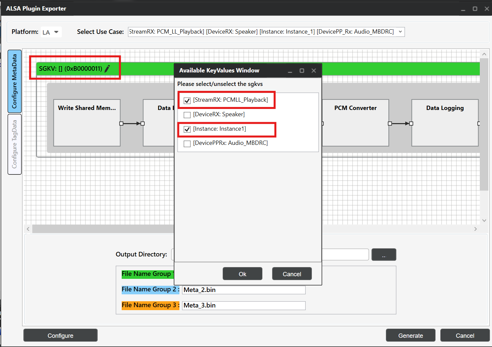
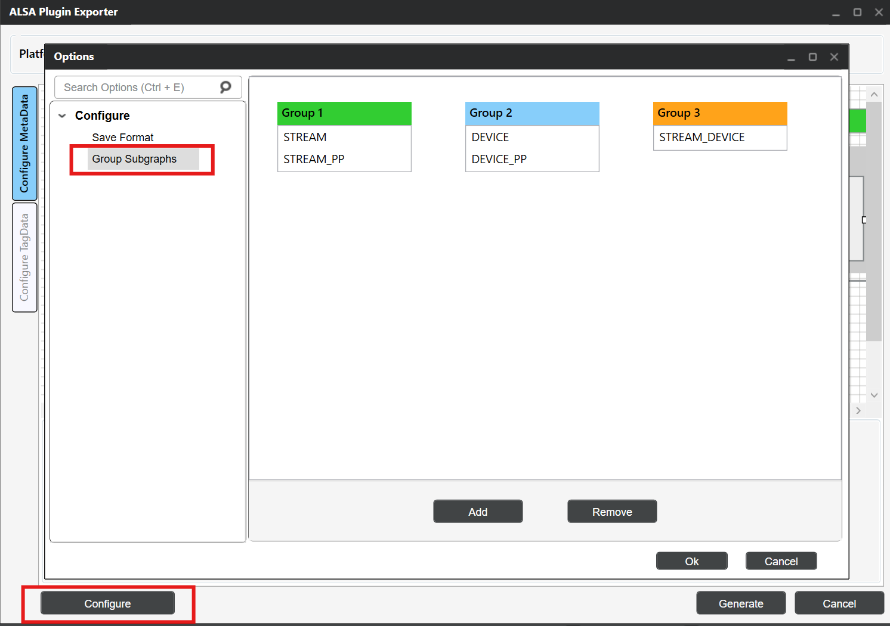
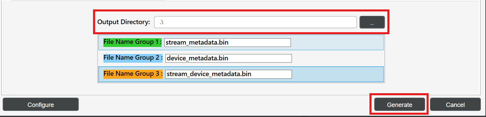

在 AudioReach 中使用 ALSA lib¶
- ALSA lib 设置
- 前提条件
- 使用 ARC 生成元数据二进制文件
- 所需的元数据文件
- 用 ARC 生成元数据
- 运行音频用例
- 通用设置
- 使用 amixer
- 使用 ALSA UCM
- 参考资料
本指南提供了将 ALSA lib 与 AudioReach 集成以实现音频用例的详细信息。AudioReach 提供了一种围绕 AGM（Audio Graph Manager，音频图管理器）构建的基于插件的架构，AGM 是一个管理音频图的用户空间服务。ALSA lib 通过 AGM 插件与 AudioReach 集成，该插件向音频应用暴露标准的 ALSA PCM 和 mixer 接口。本指南涵盖使用 ARC（AudioReach Creator）生成元数据、ALSA 插件配置，以及使用 amixer 和 ALSA UCM 运行音频用例的示例。
ALSA lib 设置¶
本节介绍 AudioReach 集成所需的 ALSA lib 软件包的安装与验证。ALSA lib 软件包提供了对接 AudioReach 基于插件的架构所需的库和工具。
前提条件¶
在设置 ALSA lib 之前，请确认所有 AudioReach 组件都已安装在你的目标平台上。请参阅相关的平台设置指南（例如 Raspberry Pi 4 的 Raspberry Pi 4）。
ALSA 软件包安装¶
对于基于 Yocto 的构建，ALSA lib 软件包应包含在 Yocto 构建中。打开文件 <yocto_build_root>/build/conf/local.conf 并添加所需的软件包：
注意
对于非 Yocto 环境（例如 Buildroot、基于 Debian 的发行版），请使用该发行版的软件包管理器或构建系统安装等效的软件包。
在 AudioReach 组件中启用 ALSA lib 插件¶
ALSA lib 插件支持在 AudioReach 构建系统中默认是禁用的，必须在两个组件中显式启用：audioreach-graphmgr 和 audioreach-conf。
| 工程 | 标志 | 类型 | 默认值 |
|---|---|---|---|
audioreach-graphmgr |
--enable-alsalib |
AC_ARG_ENABLE |
no |
audioreach-conf |
--with-libalsa |
AC_ARG_WITH |
no |
Yocto 构建
将以下配置添加到 <yocto_build_root>/build/conf/local.conf 以启用这些标志。
EXTRA_OECONF:append:pn-audioreach-graphmgr = " --enable-alsalib"
EXTRA_OECONF:append:pn-audioreach-conf = " --with-libalsa"
Autotools 构建
将标志直接传递给每个组件的 configure 脚本：
验证 ALSA 安装¶
使用以下命令验证 ALSA 安装：
# List available sound cards
aplay -l
# List available PCM devices
aplay -L
# Check ALSA version
aplay --version
使用 ARC 生成元数据二进制文件¶
ARC 用于生成 ALSA lib 集成所需的元数据二进制文件。这些文件定义了音频图拓扑和校准数据。
所需的元数据文件¶
为 ALSA lib 集成生成以下元数据二进制文件：
*Stream Metadata（流元数据）*
定义音频流的属性，例如采样率、位深和通道配置。
*Device Metadata（设备元数据）*
包含设备特定信息，包括硬件能力和路由信息。
*Stream-Device Metadata（流-设备元数据）*
将音频流映射到特定设备，并定义连接拓扑。
用 ARC 生成元数据¶
按照以下步骤使用 ARC 生成元数据文件：
第 1 步：打开 ARC（QACT）
- 在 Windows 机器上启动 QACT
- 从
/etc/acdbdata/加载 ACDB workspace 文件（从目标设备复制而来）注意
ACDB（音频校准数据库）workspace 文件包含目标设备的音频校准和拓扑数据。作为 AudioReach 平台设置的一部分，它已预装在目标设备的
/etc/acdbdata/处。
第 2 步：ALSA Plugin Exporter
- 在 QACT 中，导航至 Tools → ALSA Plugin Exporter
 QACT Tools 菜单 - ALSA Plugin Exporter
QACT Tools 菜单 - ALSA Plugin Exporter
- 点击 “Configuration MetaData” 选项卡
第 3 步：配置用例
- 从下拉菜单中选择所需的用例（例如 playback）
 用例选择
用例选择
- 为每个子图选择与用例子图对应的适当 GKV（Graph Key Vector，图键向量）。例如，如果用例中第一个子图的键设置为 PCM_LL_Playback、Instance_1，则为该子图选择对应的 GKV [StreamRX:PCM_LL_Playback] 和 [Instance: Instance1]。
 用例子图与 GKV 键
用例子图与 GKV 键

子图 GKV 选择第 4 步：配置元数据
此步骤涉及配置元数据格式以及为元数据生成对子图进行分组。
4.1：配置元数据格式
- 点击左下角的 Configure 按钮
- 选择 “Include TLV header” 选项
- 根据你的用例选择适当的文件类型：
- 对于 ALSA UCM 配置：将 File type 选择为 bin
- 对于 amixer 配置：将 File type 选择为 Hex，Delimiter 选择为 “COMMA”
 配置元数据格式
配置元数据格式
注意
TLV（Type-Length-Value，类型-长度-值）头是 ALSA lib 正确解析和传输元数据所必需的。对于基于 UCM 的配置，带 TLV 头的二进制文件与 cset-tlv API 配合使用。对于基于 amixer 的配置，带逗号分隔符的十六进制格式允许内联指定元数据。
生成的输出
在两种情况下，ARC 都会生成包含元数据的 .bin 文件。
- UCM（bin 格式）：
.bin文件通过cset-tlvAPI 被 ALSA UCM 直接使用。二进制内容会原样传输到 AGM 插件。 - amixer（hex 格式）：
.bin文件内容被导出为逗号分隔的十六进制字符串。该十六进制负载被内联传递给 amixer 命令。
4.2：配置元数据组
根据用例子图，通过选择 Group Subgraphs 来配置元数据组。
- Group1 → Stream 元数据
- Group2 → Device 元数据
- Group3 → Stream Device 元数据

配置分组子图注意
根据所选用例配置分组子图。对于没有 stream_device 前/后处理子图的用例，只生成 stream 和 device 两个 bin 文件。
第 5 步：生成元数据文件
- 更新每个组的 bin 文件名：
- Group1：
stream_metadata.bin - Group2：
device_metadata.bin - Group3：
stream_device_metadata.bin
- Group1：
 二进制组命名
二进制组命名
- 添加输出目录路径，然后点击 “Generate” 以创建元数据二进制文件。

二进制输出目录配置第 6 步：将文件传输到目标设备
将生成的元数据文件复制到目标设备：
# Copy metadata files to Target device
scp stream_metadata.bin root@<target_device_ip_address>:/etc/
scp device_metadata.bin root@<target_device_ip_address>:/etc/
scp stream_device_metadata.bin root@<target_device_ip_address>:/etc/
注意
元数据 bin 文件是按用例生成的。每个用例都有自己的一组元数据文件。
运行音频用例¶
本节演示如何使用 aplay，配合 amixer 和 ALSA UCM 配置来运行音频用例。
通用设置¶
前提条件
确保 AudioReach 服务正在运行：
所需文件设置
复制音频文件：
使用 amixer¶
本节介绍如何使用 amixer 配置和运行音频用例。AGM 插件暴露了 mixer 控件，允许直接从命令行设置 PCM 参数、元数据和设备连接。在运行 amixer 命令之前，必须先放置好 AGM ALSA 配置文件，以便 ALSA 能够通过 AGM 插件路由音频。
AGM ALSA 配置文件
agm.conf 文件是定义 AGM 插件接口的 ALSA 配置文件。该文件作为 audioreach-conf 软件包的一部分随附提供，位于目标设备的 /etc/alsa/conf.d/。它使 ALSA 应用能够使用 AGM 插件进行 AudioReach 集成。
配置概览
AGM 配置文件定义了：
- 默认 PCM 设备：将系统级的默认音频设备设置为使用 AGM
- 参数化 PCM 设备：允许应用指定自定义的声卡号和设备号
- 控制接口：提供 mixer 控制访问，用于音频参数配置
agm.conf 示例
pcm.!default {
type agm
card 100
device 100
}
pcm.agm {
@args [ CARD DEV ]
@args.CARD {
type integer
default 100
}
@args.DEV {
type integer
default 100
}
type agm
card $CARD
device $DEV
}
ctl.agm {
type agm
card 100
}
在运行下面的命令之前，先列出目标设备上可用的 mixer 控件，以确定你的配置中正确的控件名称：
示例输出：
numid=1,iface=MIXER,name='PCM100 metadata'
numid=2,iface=MIXER,name='PCM100 setParam'
numid=3,iface=MIXER,name='PCM100 setParamTag'
numid=4,iface=MIXER,name='PCM100 connect'
numid=5,iface=MIXER,name='PCM100 disconnect'
numid=6,iface=MIXER,name='PCM100 control'
numid=26,iface=MIXER,name='PCM_RT_PROXY-RX-2 rate ch fmt'
numid=27,iface=MIXER,name='PCM_RT_PROXY-RX-2 metadata'
...
PCM 设备名称（例如 PCM100、PCM_RT_PROXY-RX-2）及其关联的控件
因目标设备配置而异。请使用此命令的输出，在下面的示例中替换为正确的名称。
使用默认的 amixer 时，元数据负载必须直接在命令中、与 mixer 控件同一行指定。负载必须为十六进制格式，字节之间以逗号分隔（例如 0x00,0x01,0x02,...）。
# Set PCM parameters: rate=0xbb80 (48000 Hz), ch=0x2 (stereo), bit_width=0x2 (16-bit), fmt=0x1 (SNDRV_PCM_FORMAT_S16_LE)
amixer -D agm cset iface=MIXER,name='PCM_RT_PROXY-RX-2 rate ch fmt' 0xbb80,0x2,0x2,0x1
# Set PCM control
amixer -D agm cset iface=MIXER,name='PCM100 control' PCM_RT_PROXY-RX-2
# Set device metadata with payload (example payload)
amixer -D agm cset iface=MIXER,name='PCM_RT_PROXY-RX-2 metadata' <Device metadata payload in hex>
# Set stream metadata with payload (example payload)
amixer -D agm cset iface=MIXER,name='PCM100 metadata' <Stream metadata payload in hex>
# Set stream_device metadata with payload (example payload)
amixer -D agm cset iface=MIXER,name='PCM100 metadata' <stream_device metadata payload in hex>
# Connect PCM to device
amixer -D agm cset iface=MIXER,name='PCM100 connect' PCM_RT_PROXY-RX-2
示例：使用十六进制负载设置设备元数据
amixer -D agm cset iface=MIXER,name='PCM_RT_PROXY-RX-2 metadata' 0x00,0x00,0x00,0x00,0x28,0x00,0x00,0x00,0x02,0x00,0x00,0x00,0x00,0x00,0x00,0xA2,0x01,0x00,0x00,0xA2,0x00,0x00,0x00,0xAC,0x02,0x00,0x00,0xAC,0x00,0x00,0x00,0x00,0x10,0x00,0x00,0x08,0x02,0x00,0x00,0x00,0x02,0x00,0x00,0x00,0x05,0x00,0x00,0x00
运行播放：
使用 ALSA UCM¶
ALSA 用例管理器（UCM）为使用 AudioReach 管理音频用例提供了更高层的接口。UCM 使用配置文件来定义 mixer 控制命令并自动化用例设置。
UCM 配置文件¶
ALSA UCM 通过扫描 /usr/share/alsa/ucm2/ 目录来发现配置。对于物理声卡，它会在以声卡命名的子目录中查找；对于虚拟声卡，它会扫描 /usr/share/alsa/ucm2/conf.virt.d/。对于 AudioReach 集成，AGM 虚拟声卡配置存在于目标设备的 conf.virt.d/ 目录中。
AGM 虚拟声卡配置文件
AGM 虚拟声卡配置文件（agmvirtualsndcard.conf）作为 audioreach-conf 软件包的一部分随附提供，位于目标设备的 /usr/share/alsa/ucm2/conf.virt.d/。它定义了 AGM 虚拟声卡及其关联的用例，并充当 ALSA UCM 管理基于 AudioReach 的音频路由的入口点。
配置文件定义了：
- PCM 设备模板：可复用的 PCM 设备配置，带有参数化的声卡号和设备号
- 控制设备：用于音频参数管理的 mixer 控制接口
- 用例定义：对特定音频场景配置的引用（例如 PCMPlayback、VoiceCall）
agmvirtualsndcard.conf 示例
Syntax 4
LibraryConfig.agm.Config {
pcm.agm {
@args [ CARD DEV ]
@args.CARD {
type integer
default 100
}
@args.DEV {
type integer
default 100
}
type agm
card $CARD
device $DEV
}
ctl.agm {
type agm
card 100
}
}
SectionUseCase."PCMPlayback" {
File "PCMPlayback.conf"
}
用例配置文件
PCMPlayback.conf 文件包含用于建立播放的 mixer 控制命令。ALSA UCM 支持使用 cset-tlv API 为元数据 mixer 控件发送 .bin 文件。该文件与 agmvirtualsndcard.conf 一起位于目标设备的 /usr/share/alsa/ucm2/conf.virt.d/。
PCMPlayback.conf 结构示例
PCMPlayback.conf 文件包含类似如下的 mixer 控制序列：
Syntax 2
SectionVerb {
EnableSequence [
cdev "agm"
cset "iface=MIXER,name='PCM_RT_PROXY-RX-2 rate ch fmt' 0xbb80,0x2,0x2,0x1"
cset "iface=MIXER,name='PCM100 control' PCM_RT_PROXY-RX-2"
cset-tlv "iface=MIXER,name='PCM_RT_PROXY-RX-2 metadata' /etc/device_metadata.bin"
cset-tlv "iface=MIXER,name='PCM100 metadata' /etc/stream_metadata.bin"
cset-tlv "iface=MIXER,name='PCM100 metadata' /etc/stream_device_metadata.bin"
cset "iface=MIXER,name='PCM100 connect' PCM_RT_PROXY-RX-2"
]
DisableSequence [
]
Value {
PlaybackPCM "agm:100,100"
}
}
SectionDevice."Speaker" {
EnableSequence [
]
DisableSequence [
]
Value {
PlaybackChannels "2"
}
}
使用 UCM 运行用例¶
建立用例
使用 alsaucm 配置音频用例：
# Set up playback use-case using alsaucm
alsaucm -n -b - <<EOM
open agmvirtualsndcard
set _verb PCMPlayback
EOM
其中：
agmvirtualsndcard是虚拟声卡配置文件名PCMPlayback是 ALSA UCM 中的用例 Verb，定义在 agmvirtualsndcard.conf 中
使用 UCM 运行播放
建立用例后，运行播放：
参考资料¶
AudioReach
ALSA UCM
amixer